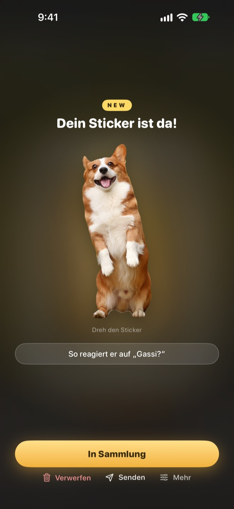
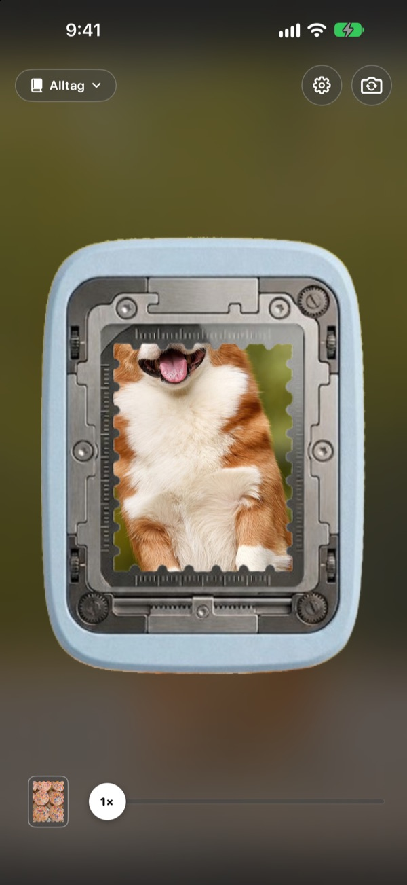
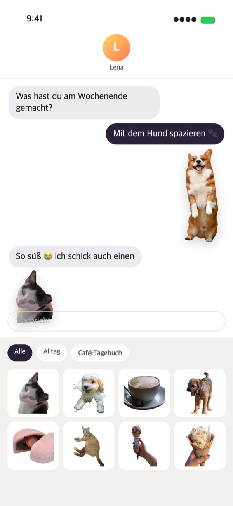
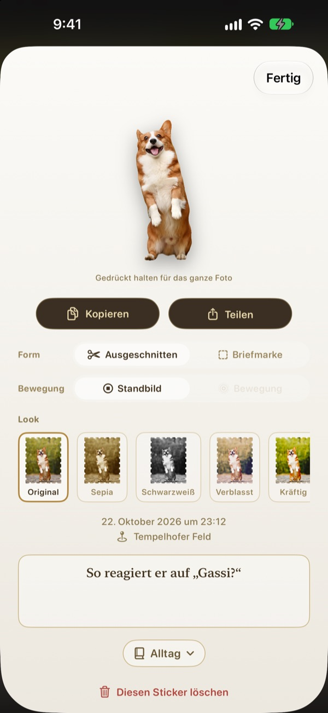
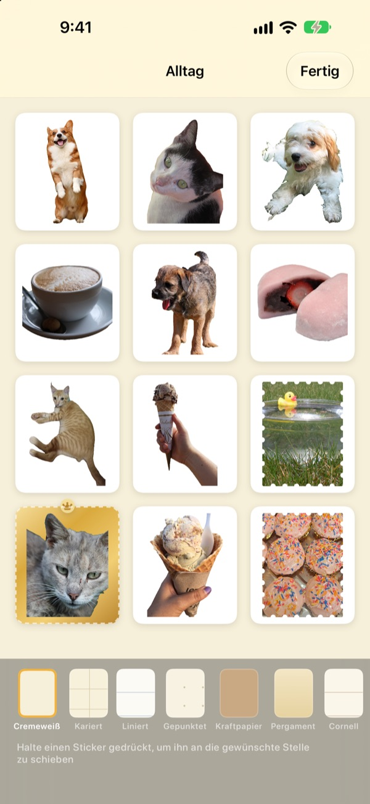

Gedrückt halten.
Der Moment wird zum Sticker.
Richte die Szene im Locherfenster aus, halte gedrückt und lass los. Dein Hund wird genau entlang seiner Umrisse ausgeschnitten, samt der kurzen Bewegung vor und nach dem Drücken. Senden kannst du ihn sofort aus Nachrichten oder über die Tastatur.
Alle Funktionen sind kostenlos. Sticker und Fotos bleiben auf deinem Gerät.

Probier es selbst aus
Wähle eine Szene, halte den Locher-Knopf gedrückt und lass los. Danach kannst du Form und Look wechseln.
Süße Momente schlummern in der Fotomediathek
Dein Hund streckt die Zunge raus, und du erwischst genau den Moment. Um daraus einen Sticker zu machen, musst du das Foto suchen, ausschneiden und noch eine Sticker-App öffnen. Bis dahin ist der Chat längst beim nächsten Thema. Punching trennt den Sticker direkt beim Fotografieren ab, und sobald du ihn in eine Sammlung legst, liegt er in der Sticker-Ablage von Nachrichten.
Motive ausgeschnitten, Landschaften als Briefmarke
Gibt es etwas zum Ausschneiden, etwa eine Person, ein Haustier oder einen Gegenstand, bekommst du genau das. Fehlt ein Motiv, wie bei einer Landschaft, wird eine Briefmarke mit Zackenrand abgetrennt.
Die kurze Bewegung vor und nach dem Drücken kommt mit, deshalb bewegt sich dein Sticker.

Direkt in Nachrichten und auf der Tastatur
Abgetrennte Sticker erscheinen in der Sticker-Ablage von Nachrichten. Aktivierst du die Punching-Tastatur, kannst du sie auch in anderen Apps auswählen und einsetzen.
Bewegte Sticker kommen bewegt an. Halte einen Sticker gedrückt, um ihn zu kopieren, und setze ihn ein, wo du willst.

Form und Look auch nachträglich
Wechsle jederzeit zwischen ausgeschnitten und Briefmarke, zwischen Bewegung und Standbild. Das Originalfoto bleibt erhalten, deshalb bleibt alles so scharf wie beim ersten Mal, egal wie oft du wechselst.
Wähle einen Look aus Original, Sepia, Schwarzweiß, Verblasst, Kräftig und Cyan und notiere ein paar Worte, Datum und Ort.

In Sammlungen ordnen, auf Papier drucken
Lege Sammlungen nach Thema an, dann wählst du auch in Nachrichten und auf der Tastatur Sammlung für Sammlung. Such dir Seiten wie Kraftpapier, Kariert, Liniert oder Pergament aus und ordne die Sticker, wie du magst.
Mach aus einer Sammlung ein druckfertiges PDF mit Schnittlinien in Briefmarkenform und drucke es direkt auf Stickerpapier.

In drei Schritten loslegen
- 1
Ausrichten
Bring, was du festhalten willst, ins Fenster in der Mitte der Kamera.
- 2
Halten und loslassen
Beim Loslassen wird der Sticker abgetrennt.
- 3
Sammeln und senden
Leg ihn in eine Sammlung, und schon ist er in Nachrichten und auf der Tastatur.
Wo du es nutzt und wo du es änderst
- Nachrichten
- ＋ neben dem Eingabefeld ▸ Sticker ▸ Punching Sticker
- Andere Apps
- Punching-Tastatur aktivieren, mit der Globus-Taste wechseln, Sticker auswählen und einsetzen
- Überall
- Sticker gedrückt halten, kopieren und einsetzen
- Papier-Sticker
- ⋯ in einer Sammlung ▸ Verwenden ▸ Sticker-Bogen zum Drucken (PDF)
- Seiten und Reihenfolge
- ⋯ in einer Sammlung ▸ Frei gestalten
- Ältere Fotos
- Aus Fotos importieren in einer Sammlung
- Form beim Abtrennen
- Einstellungen ▸ Abtrennen ▸ Standardform
- Bewegung ansehen
- Einstellungen ▸ Ansicht ▸ Bewegung automatisch abspielen
- Schnell öffnen
- Punching-Kamera öffnen in Kurzbefehle oder im Kontrollzentrum
Die Einstellungen öffnest du über das Zahnrad oben rechts in der Kamera.
Häufige Fragen
Mein Sticker bewegt sich nicht.
Prüfe oben rechts in der Kamera unter Einstellungen ▸ Ansicht, ob Bewegung automatisch abspielen aktiviert ist. Tippe dann den Sticker an und sieh nach, ob unter Form die Option Bewegung aktiviert ist. Die Bewegung wird immer mit aufgenommen, du kannst sie also jederzeit einschalten. Aus der Fotos-App importierte Fotos sind Einzelbilder und bewegen sich nicht.
Ich bekomme eine Briefmarke statt eines ausgeschnittenen Stickers.
Szenen ohne Motiv zum Ausschneiden, etwa Landschaften, werden automatisch als Briefmarke abgetrennt. Tippe den Sticker an, um das unter Form jederzeit zu ändern. Willst du von Anfang an Briefmarken, ändere Einstellungen ▸ Abtrennen ▸ Standardform.
Meine Sticker erscheinen nicht in Nachrichten.
Tippe in Nachrichten neben dem Eingabefeld auf ＋ ▸ Sticker und such nach Punching Sticker. Sie erscheinen, sobald du in Punching mindestens einen Sticker abgetrennt hast. Hast du mehr als eine Sammlung, kannst du Sammlung für Sammlung blättern. Eine Schritt-für-Schritt-Anleitung findest du unter Einstellungen ▸ Verwenden ▸ In Nachrichten und Tastatur verwenden.
Wie aktiviere ich die Tastatur?
Tippe unter Einstellungen ▸ Verwenden ▸ In Nachrichten und Tastatur verwenden auf Einstellungen öffnen und aktiviere Tastaturen ▸ Punching Sticker. Zum Einsetzen von Stickern ist „Vollen Zugriff erlauben“ nötig, die Tastatur liest oder sendet aber nie, was du tippst, und geht nie ins Internet. Tippe dann in einer beliebigen App auf die Globus-Taste, um zu Punching Sticker zu wechseln.
Kann ich echte Sticker drucken?
Tippe oben rechts in einer Sammlung auf ⋯ ▸ Verwenden ▸ Sticker-Bogen zum Drucken (PDF). Du bekommst für die ganze Sammlung ein druckfertiges PDF mit 300 dpi und Schnittlinien in Briefmarkenform, bereit für Stickerpapier im Drucker zu Hause oder für die Druckerei. Die Druckanleitung im selben Menü führt dich Schritt für Schritt durch.
Wo sind meine früheren Kollektionen?
Seit Version 1.0.1 werden Sticker nur noch auf eine Art gruppiert: in Sammlungen. Jede Kollektion wurde zu einer Sammlung mit demselben Namen, Sticker, Seiten und Reihenfolge wurden unverändert übernommen.
In der Statusleiste leuchtet ein grünes Licht.
Das ist die Kamera-Anzeige von iOS. Sie leuchtet nur, solange die Kameraansicht offen ist. Öffnest du eine Sammlung, wird die Kamera angehalten und das Licht geht aus.
Was passiert, wenn ich einen Sticker lösche?
Sticker, Originalfoto und Bewegungsdaten werden endgültig von deinem Gerät gelöscht und verschwinden auch aus der Sticker-Ablage von Nachrichten. Wiederherstellen lässt sich nichts, also lösche mit Bedacht.
Wo werden meine Fotos und Sticker gespeichert?
Nur auf deinem Gerät. Es gibt kein Konto, keinen eigenen Server und keine Werbung. Dein Gerät verlassen nur anonyme Nutzungsstatistiken, Fehlerberichte und Feedback, das du selbst schickst. Details stehen in der Datenschutzerklärung.
Ist das wirklich kostenlos?
Ja, alle Funktionen sind kostenlos. Wenn dir die App gefällt, kannst du dem Entwickler in der App ein Trinkgeld geben, freigeschaltet wird dadurch aber nichts.
Fragen oder Feedback? Schreib an leeo@kakao.com. Wir antworten meist innerhalb von 2 bis 3 Tagen. Fehlermeldungen und Funktionswünsche nehmen wir auch auf GitHub unter M1zz/StampCamera entgegen.